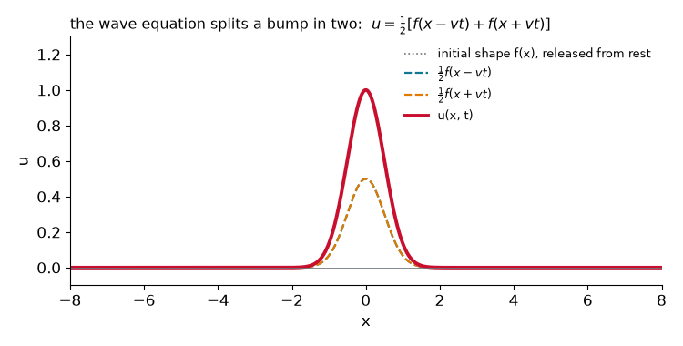
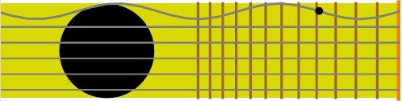
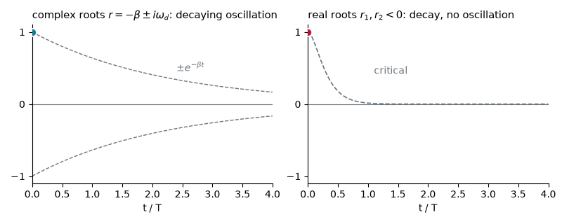
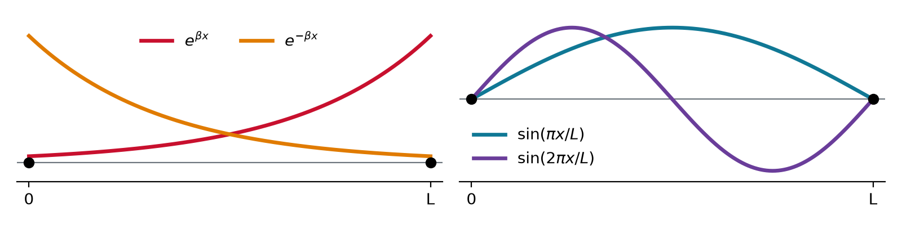
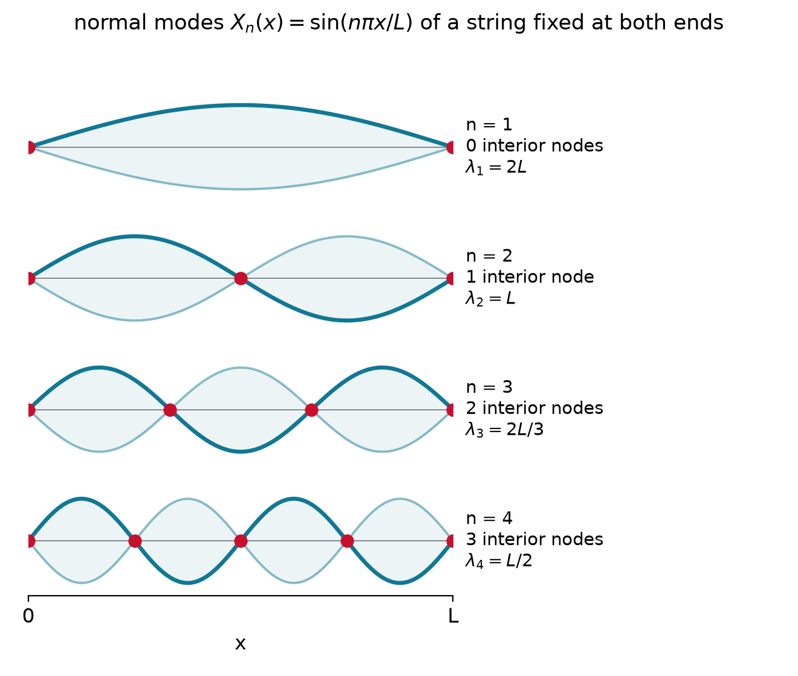
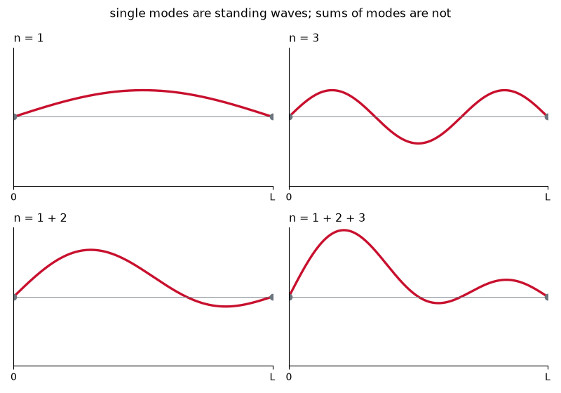
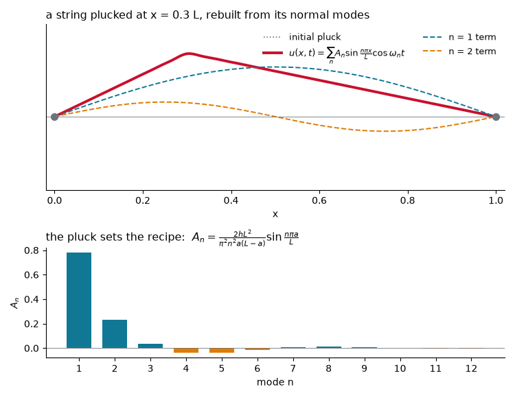
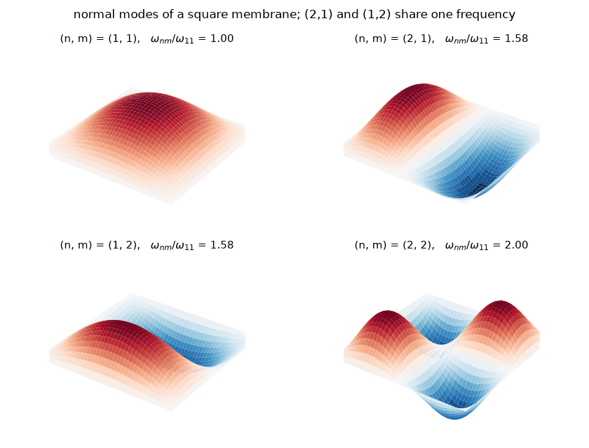

Chem 3240 · Lecture 2.2

\frac{\partial^2 u}{\partial x^2} = \frac{1}{v^2}\frac{\partial^2 u}{\partial t^2}

1. Boundary conditions
u(0,t) = 0, \qquad u(L,t) = 0
2. Separation of variables
u(x,t) = X(x)\,T(t)
3. Superposition
u = \sum_n c_n\, u_n
Plug u = X(x)T(t) into the wave equation and divide by XT:
\frac{1}{v^2\,T}\frac{d^2T}{dt^2} = \frac{1}{X}\frac{d^2X}{dx^2} = K
One PDE becomes two ODEs
\frac{d^2X}{dx^2} - KX = 0, \qquad \frac{d^2T}{dt^2} - Kv^2\,T = 0
Trial function: every derivative of e^{rx} returns a multiple of e^{rx}
X = e^{rx} \quad\Rightarrow\quad \frac{d^2X}{dx^2} = r^2\,e^{rx}
Plug into X'' - KX = 0 and factor:
r^2 e^{rx} - K\,e^{rx} = \left(r^2 - K\right)e^{rx} = 0
r^2 = K \qquad\Rightarrow\qquad r = \pm\sqrt{K}
Solve \dfrac{d^2y}{dt^2} + 2\beta\dfrac{dy}{dt} + \omega^2 y = 0 with the trial function e^{rt}.
r^2 + 2\beta r + \omega^2 = 0 \quad\Rightarrow\quad r = -\beta \pm \sqrt{\beta^2 - \omega^2}
\beta < \omega:\; r = -\beta \pm i\omega_d, \quad y = e^{-\beta t}\left[C_1\cos\omega_d t + C_2\sin\omega_d t\right]
\beta > \omega:\; r_1, r_2 \text{ real and negative}, \quad y = C_1 e^{r_1 t} + C_2 e^{r_2 t}

K = \beta^2 > 0: real roots
X = c_1e^{\beta x} + c_2e^{-\beta x}
K = -\beta^2 < 0: imaginary roots
X = A\cos\beta x + B\sin\beta x


\sin\beta L = 0 only at multiples of \pi, so \beta_n = n\pi/L with n = 1, 2, 3, \ldots
X_n(x) = B_n\sin\frac{n\pi x}{L}
\frac{d^2T}{dt^2} + \beta_n^2 v^2\,T = 0 \quad\Longrightarrow\quad T_n(t) = A_n\cos(\omega_n t + \phi_n), \qquad \omega_n = \frac{n\pi v}{L}
u(x,t) = \sum_{n=1}^{\infty} A_n \sin\left(\frac{n\pi x}{L}\right)\cos(\omega_n t + \phi_n), \qquad \omega_n = \frac{n\pi v}{L}

A string with L = 0.50 m carries waves at v = 200 m/s. Find the wavelengths and frequencies of the first three modes.
\lambda_n = \frac{2L}{n} = 1.00,\; 0.50,\; 0.33\ \text{m}
\nu_n = \frac{v}{\lambda_n} = n\frac{v}{2L} = 200,\; 400,\; 600\ \text{Hz}

Released from rest: \phi_n = 0 and f(x) = \sum_n A_n \sin\frac{n\pi x}{L}
A_n = \frac{2}{L}\int_0^L f(x)\sin\frac{n\pi x}{L}\,dx
Pluck position a sets the mix of harmonics: A_n \propto \sin(n\pi a/L)\,/\,n^2
{
const N = 12;
const An = d3.range(1, N + 1).map(n => ({n, A: 2 * Math.sin(n * Math.PI * apos) / (Math.PI**2 * n*n * apos * (1 - apos))}));
const xs = d3.range(0, 1.0001, 0.005);
const shape = xs.map(x => ({x, y: x < apos ? x / apos : (1 - x) / (1 - apos)}));
const rebuilt = xs.map(x => ({x, y: d3.sum(An, d => d.A * Math.sin(d.n * Math.PI * x))}));
const left = Plot.plot({width: 580, height: 320, x: {label: "x / L"}, y: {domain: [-0.2, 1.2], label: "u / h"},
marks: [Plot.ruleY([0], {stroke: "#ccc"}),
Plot.line(shape, {x: "x", y: "y", stroke: "#6c757d", strokeDasharray: "4,4"}),
Plot.line(rebuilt, {x: "x", y: "y", stroke: "#C8102E", strokeWidth: 2.5})]});
const right = Plot.plot({width: 520, height: 320, x: {label: "mode n", tickFormat: d => d}, y: {domain: [-0.35, 0.9], label: "Aₙ / h"},
marks: [Plot.ruleY([0], {stroke: "#ccc"}),
Plot.barY(An, {x: "n", y: "A", fill: d => d.A >= 0 ? "#107895" : "#e07b00"})]});
return html`<div style="display:flex; gap: 24px; align-items: flex-start">${left}${right}</div>`;
}
u = X(x)\,Y(y)\,T(t): two integers n, m
\omega_{nm} = v\pi\sqrt{\frac{n^2}{a^2} + \frac{m^2}{b^2}}
| classical string | quantum particle in a box |
|---|---|
| u_{xx} = u_{tt}/v^2 | -\frac{\hbar^2}{2m}\Psi_{xx} + V\Psi = i\hbar\Psi_t |
| u = X(x)\,T(t) | \Psi = \psi(x)\,e^{-iEt/\hbar} |
| X(0) = X(L) = 0 | \psi(0) = \psi(L) = 0 |
| modes \sin(n\pi x/L) | states \sin(n\pi x/L) |
| \omega_n \propto n | E_n \propto n^2 |
| pluck sets A_n | state sets c_n |
Separation of variables turns the wave equation into ODEs, boundary conditions turn the ODEs into quantized normal modes, and initial conditions decide how much of each mode is present. Chapter 3 runs the same recipe on the Schrödinger equation.
Chem 3240 · Quantum Mechanics